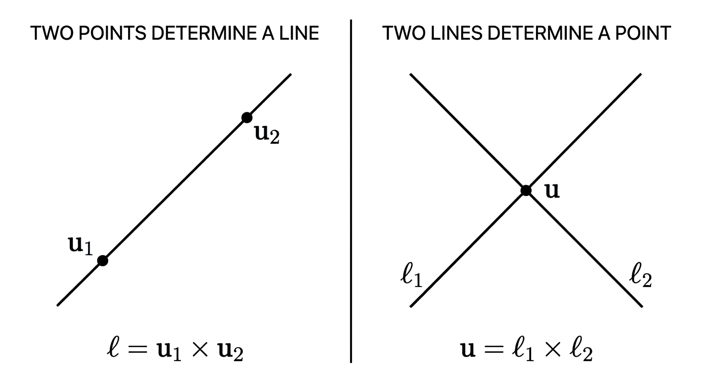
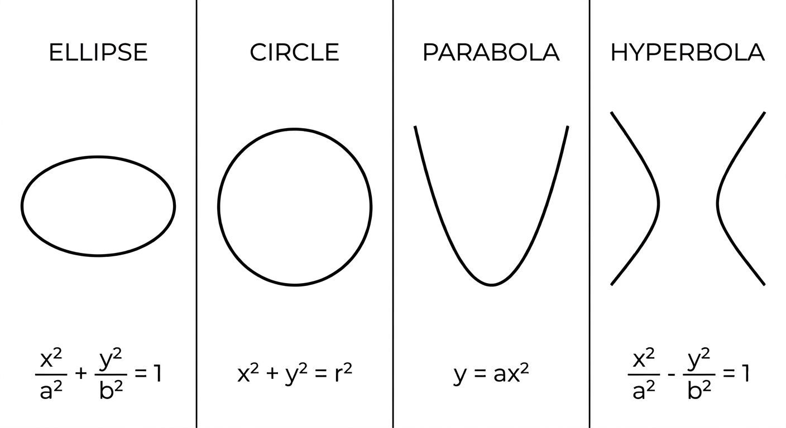
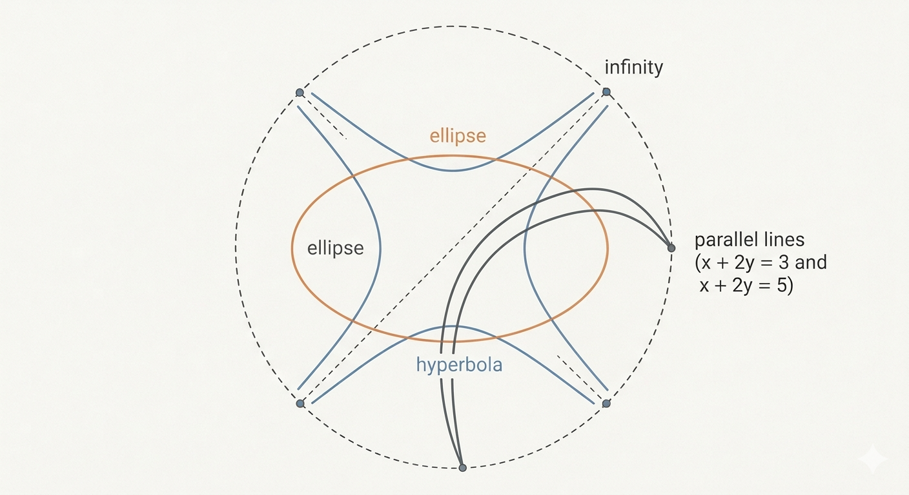
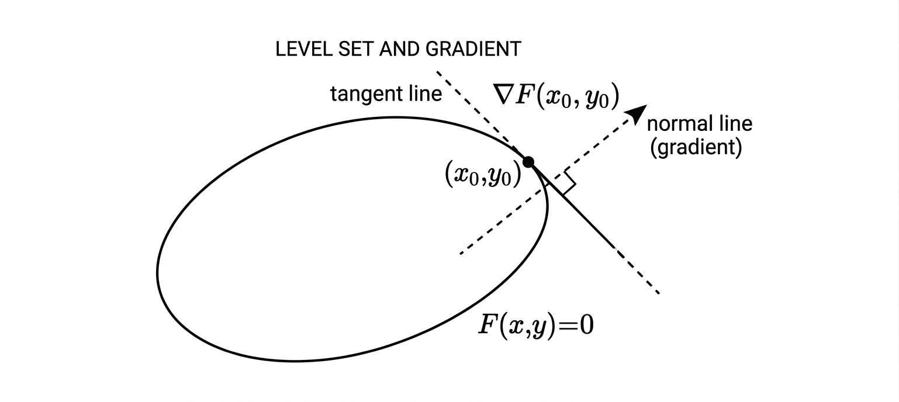
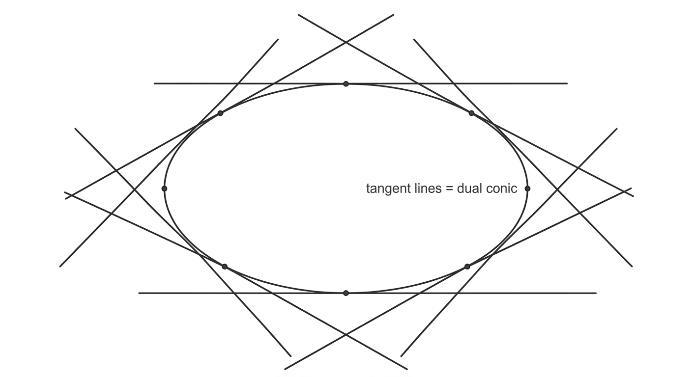
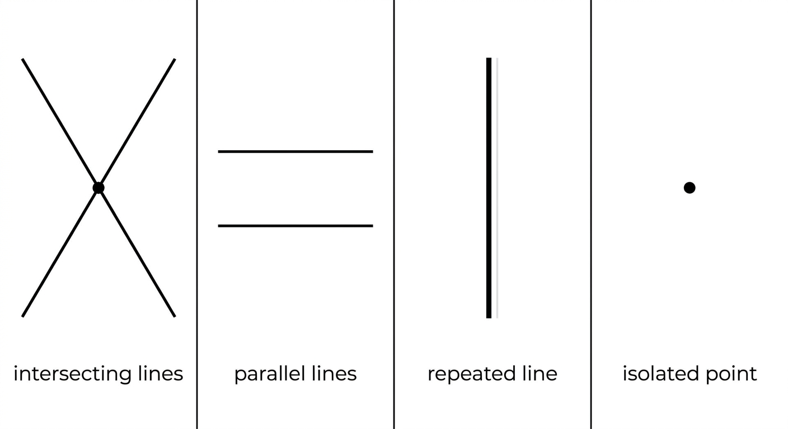

3D Computer Vision from First Principles — Part 2
Projective Duality and Conics in \(\mathbb{P}^2\)
Summary of Part 1
In Part 1, we built \(\mathbb{P}^2\) from scratch — starting from nothing but the desire to intersect two lines. Given two lines \(\boldsymbol{\ell}_1\) and \(\boldsymbol{\ell}_2\) in \(\mathbb{R}^2\), represented as vectors of their coefficients, their intersection point is \([\mathbf{u}] = [\boldsymbol{\ell}_1 \times \boldsymbol{\ell}_2]\) — an equivalence class in \(\mathbb{P}^2\). We defined the equivalence relation \(\sim\) on \(\mathbb{R}^3 \setminus \{\mathbf{0}\}\), showed that \(\mathbb{P}^2\) splits into two pieces (\(u_3 \neq 0\) and \(u_3 = 0\)), and proved the bijection \(\phi\) with \(\mathbb{R}^2\).
In this post we ask the dual question: given two points, what is the line through them? The answer falls out of the same cross product machinery — with points and lines swapped. This symmetry is called projective duality, and it is one of the cleanest facts in all of projective geometry. We then move on to conics — curves defined by degree-2 equations — and show how they live naturally in \(\mathbb{P}^2\).
Projective Duality
The Line Through Two Points
Given two points \(\mathbf{x}_1 = (x_1, y_1)^\top\) and \(\mathbf{x}_2 = (x_2, y_2)^\top\) in \(\mathbb{R}^2\), what is the line passing through both?
Let the line be \(\boldsymbol{\ell} = (a, b, c)^\top\), so the line equation is \(ax + by + c = 0\). The two conditions are:
\[ax_1 + by_1 + c = 0 \qquad \text{and} \qquad ax_2 + by_2 + c = 0\]
Lift the points to \(\mathbb{R}^3\):
\[\tilde{\mathbf{u}}_1 = \begin{pmatrix} x_1 \\ y_1 \\ 1 \end{pmatrix}, \qquad \tilde{\mathbf{u}}_2 = \begin{pmatrix} x_2 \\ y_2 \\ 1 \end{pmatrix}\]
The two conditions become:
\[\tilde{\mathbf{u}}_1^\top \boldsymbol{\ell} = 0 \qquad \text{and} \qquad \tilde{\mathbf{u}}_2^\top \boldsymbol{\ell} = 0\]
So \(\boldsymbol{\ell}\) is in the null space of:
\[A = \begin{bmatrix} \tilde{\mathbf{u}}_1^\top \\ \tilde{\mathbf{u}}_2^\top \end{bmatrix} \in \mathbb{R}^{2 \times 3}\]
If \(\mathbf{x}_1 \neq \mathbf{x}_2\), then \(\tilde{\mathbf{u}}_1\) and \(\tilde{\mathbf{u}}_2\) are linearly independent — the third coordinate \(1\) ensures this, even if \((x_1, y_1)^\top\) and \((x_2, y_2)^\top\) are scalar multiples of each other as vectors in \(\mathbb{R}^2\). So \(A\) has rank \(2\), and by rank-nullity:
\[\dim(\text{null}(A)) = 3 - 2 = 1\]
The null space is one-dimensional, spanned by \(\tilde{\mathbf{u}}_1 \times \tilde{\mathbf{u}}_2\). So:
\[\boldsymbol{\ell} = \tilde{\mathbf{u}}_1 \times \tilde{\mathbf{u}}_2\]
unique up to nonzero scale. If another line \(\boldsymbol{\ell}'\) also passes through both points, then \(\boldsymbol{\ell}'\) is also in the null space of \(A\) — which is one-dimensional. So \(\boldsymbol{\ell}' = \lambda\boldsymbol{\ell}\) for some \(\lambda \neq 0\). The line is unique in \(\mathbb{P}^2\).
Note: we lifted \((x_i, y_i)^\top\) to \((x_i, y_i, 1)^\top\) purely as an algebraic device to write the line equation as a dot product. No \(\mathbb{P}^2\) yet — we are still working in \(\mathbb{R}^2\).
Well-Definedness
Does the line \([\boldsymbol{\ell}] = [\tilde{\mathbf{u}}_1 \times \tilde{\mathbf{u}}_2]\) depend on which representatives we choose for the two points? Suppose we replace \(\tilde{\mathbf{u}}_1\) with \(\lambda_1 \tilde{\mathbf{u}}_1\) and \(\tilde{\mathbf{u}}_2\) with \(\lambda_2 \tilde{\mathbf{u}}_2\). The cross product becomes:
\[(\lambda_1 \tilde{\mathbf{u}}_1) \times (\lambda_2 \tilde{\mathbf{u}}_2) = \lambda_1 \lambda_2 (\tilde{\mathbf{u}}_1 \times \tilde{\mathbf{u}}_2) = \lambda_1 \lambda_2 \boldsymbol{\ell}\]
Still in the same equivalence class \([\boldsymbol{\ell}]\). The line is well-defined.
The Symmetry
So we have:
- Intersection of two lines \(\boldsymbol{\ell}_1\) and \(\boldsymbol{\ell}_2\): the point \([\mathbf{u}] = [\boldsymbol{\ell}_1 \times \boldsymbol{\ell}_2]\)
- Line through two points \(\tilde{\mathbf{u}}_1\) and \(\tilde{\mathbf{u}}_2\): the line \([\boldsymbol{\ell}] = [\tilde{\mathbf{u}}_1 \times \tilde{\mathbf{u}}_2]\)
Same formula. Same derivation. Points and lines play perfectly symmetric roles.
Collinear Points and Concurrent Lines
Three collinear points. Suppose \([\mathbf{u}_1]\), \([\mathbf{u}_2]\), and \([\mathbf{u}_3]\) all lie on the same line \(\boldsymbol{\ell}\). Then:
\[A\boldsymbol{\ell} = \mathbf{0}, \qquad A = \begin{bmatrix} \mathbf{u}_1^\top \\ \mathbf{u}_2^\top \\ \mathbf{u}_3^\top \end{bmatrix} \in \mathbb{R}^{3 \times 3}\]
Since \(\boldsymbol{\ell} \neq \mathbf{0}\), \(A\) must be singular:
\[\det A = 0 \qquad \Longleftrightarrow \qquad \det\begin{bmatrix} \mathbf{u}_1 & \mathbf{u}_2 & \mathbf{u}_3 \end{bmatrix} = 0\]
since \(\det A = \det A^\top\). This is just saying that \(\{\mathbf{u}_1, \mathbf{u}_2, \mathbf{u}_3\}\) is linearly dependent.
Three concurrent lines. Now suppose \(\boldsymbol{\ell}_1\), \(\boldsymbol{\ell}_2\), \(\boldsymbol{\ell}_3\) all pass through the same point \(\mathbf{u}\). Their pairwise intersections must all be the same point:
\[\mathbf{u}_{12} = \boldsymbol{\ell}_1 \times \boldsymbol{\ell}_2, \quad \mathbf{u}_{23} = \boldsymbol{\ell}_2 \times \boldsymbol{\ell}_3, \quad \mathbf{u}_{13} = \boldsymbol{\ell}_1 \times \boldsymbol{\ell}_3\]
From \(\mathbf{u}_{12} = \mathbf{u}_{23}\), taking the dot product with \(\boldsymbol{\ell}_1\):
\[\langle \boldsymbol{\ell}_1, \boldsymbol{\ell}_2 \times \boldsymbol{\ell}_3 \rangle = 0\]
This is the scalar triple product — which equals \(\det[\boldsymbol{\ell}_1\ \boldsymbol{\ell}_2\ \boldsymbol{\ell}_3]\). So:
\[\det\begin{bmatrix} \boldsymbol{\ell}_1 & \boldsymbol{\ell}_2 & \boldsymbol{\ell}_3 \end{bmatrix} = 0\]
The same determinant condition. Points and lines swapped.
The Duality Principle
Definition (Duality Principle). In \(\mathbb{P}^2\), every valid statement about points and lines remains valid when the words “point” and “line” are swapped everywhere. This is a direct consequence of the symmetry of the incidence condition \(\boldsymbol{\ell}^\top \mathbf{u} = 0\).
| Statement | Dual statement |
|---|---|
| Two points determine a unique line | Two lines determine a unique point |
| Line through two points: \(\boldsymbol{\ell} = \tilde{\mathbf{u}}_1 \times \tilde{\mathbf{u}}_2\) | Point on two lines: \(\mathbf{u} = \boldsymbol{\ell}_1 \times \boldsymbol{\ell}_2\) |
| Three points collinear: \(\det[\mathbf{u}_1\ \mathbf{u}_2\ \mathbf{u}_3] = 0\) | Three lines concurrent: \(\det[\boldsymbol{\ell}_1\ \boldsymbol{\ell}_2\ \boldsymbol{\ell}_3] = 0\) |

Same formula. Same proof. Swap points and lines and every statement remains true.
When we pass to \(\mathbb{P}^2\), we take equivalence classes. A point in \(\mathbb{P}^2\) is \([\mathbf{u}]\). A line in \(\mathbb{P}^2\) is \([\boldsymbol{\ell}]\). Both are equivalence classes of nonzero vectors in \(\mathbb{R}^3\). There is no algebraic distinction between the two — only the role they play in \(\boldsymbol{\ell}^\top \mathbf{u} = 0\).
Conics
What is a Conic?
A conic section — or simply a conic — is the curve formed by the intersection of a plane with a double cone. Depending on the angle at which the plane cuts the cone, you get one of three shapes: an ellipse, a parabola, or a hyperbola. A circle is a special case of an ellipse.
You have likely seen their standard equations:
\[\text{Ellipse:} \quad \frac{x^2}{a^2} + \frac{y^2}{b^2} = 1\]
\[\text{Circle:} \quad x^2 + y^2 = r^2\]
\[\text{Parabola:} \quad y = ax^2\]
\[\text{Hyperbola:} \quad \frac{x^2}{a^2} - \frac{y^2}{b^2} = 1\]

A (Forgotten?) View of Conics
Here is a view of conics that is perhaps less familiar — though if you prepared for competitive entrance exams like the IIT-JEE, you may have seen it before and promptly forgotten it. I certainly did. I studied second-degree equations almost twenty years ago in JEE preparation, memorized the discriminant condition, and moved on. Unfortunately, I never understood conics and I never even cleared the JEE exam. Lol.
What vindicated me, five to eight years ago, was the spectral theorem. Suddenly the eigenvalues of a \(2 \times 2\) matrix explained everything the discriminant was trying to say. The formulas had been pointing at linear algebra all along.
\[F(x, y) = ax^2 + bxy + cy^2 + dx + ey + f = 0\]
for some coefficients \(a, b, c, d, e, f \in \mathbb{R}\), not all zero. The zero set \(\{(x, y) \in \mathbb{R}^2 : F(x, y) = 0\}\) is a conic.
It turns out that every ellipse, parabola, and hyperbola can be written in this form — and conversely, solving \(F(x, y) = 0\) gives either one of the three standard conics or a degenerate case: a pair of straight lines, a single line, or a single point.
The shape of the conic is entirely determined by the coefficients \(a, b, c, d, e, f\). We will now look at this equation very carefully from the point of view of linear algebra — and see what the coefficient matrix tells us about the geometry.
The Matrix Form
Every second-degree polynomial \(F(x, y)\) can be written in matrix form as:
\[F(\mathbf{x}) = \mathbf{x}^\top A \mathbf{x} + \mathbf{g}^\top \mathbf{x} + f\]
where \(\mathbf{x} = (x, y)^\top\), \(\mathbf{g} = (d, e)^\top\), and \(A\) is the \(2 \times 2\) symmetric matrix:
\[A = \begin{pmatrix} a & b/2 \\ b/2 & c \end{pmatrix}\]
Diagonalizing via the Spectral Theorem
\(A\) is symmetric. By the spectral theorem, there exists an orthogonal matrix \(Q\) such that:
\[A = Q \Lambda Q^\top, \qquad \Lambda = \begin{pmatrix} \lambda_1 & 0 \\ 0 & \lambda_2 \end{pmatrix}\]
where \(\lambda_1, \lambda_2\) are the eigenvalues of \(A\). The shape of the conic turns out to depend entirely on the signs of these eigenvalues. But first, a change of variables that makes this visible.
A Change of Variables
Substitute \(A = Q\Lambda Q^\top\) into \(F(\mathbf{x})\):
\[F(\mathbf{x}) = \mathbf{x}^\top Q \Lambda Q^\top \mathbf{x} + \mathbf{g}^\top \mathbf{x} + f\]
Set \(\mathbf{z} = Q^\top \mathbf{x}\). Since \(Q\) is orthogonal, this is just a rotation of coordinates. Also write \(\mathbf{h} = Q^\top \mathbf{g}\), so that \(\mathbf{g}^\top \mathbf{x} = \mathbf{h}^\top \mathbf{z}\). Then:
\[F(\mathbf{z}) = \mathbf{z}^\top \Lambda \mathbf{z} + \mathbf{h}^\top \mathbf{z} + f = \lambda_1 z_1^2 + \lambda_2 z_2^2 + h_1 z_1 + h_2 z_2 + f\]
I am using \(F(\mathbf{z})\) as an abuse of notation — it is the same function, just expressed in rotated coordinates.
Completing the Square
Assume for now that \(\lambda_1 \neq 0\) and \(\lambda_2 \neq 0\) — that is, \(\det A = \lambda_1 \lambda_2 \neq 0\), so \(A\) is invertible. Then complete the square in each variable. Set:
\[w_i = z_i + \frac{h_i}{2\lambda_i}, \qquad i = 1, 2\]
The algebra of completing the square is straightforward but messy — it would fill half a page and obscure the point. I will spare you the details and just state the result: the linear terms absorb into the squares, and \(F(\mathbf{z}) = 0\) becomes:
\[\lambda_1 w_1^2 + \lambda_2 w_2^2 = \rho\]
for some constant \(\rho\) that collects the leftover terms from completing the square. The conic, in coordinates \(\mathbf{w}\), is now in its simplest form. The shape is visible directly from the signs of \(\lambda_1\) and \(\lambda_2\).
The Three Cases
Case 1: Same sign eigenvalues.
Suppose \(\lambda_1 > 0\) and \(\lambda_2 > 0\) (multiply through by \(-1\) if both are negative). Then \(\lambda_1 w_1^2 + \lambda_2 w_2^2 = \rho\) gives:
\[\frac{w_1^2}{\rho/\lambda_1} + \frac{w_2^2}{\rho/\lambda_2} = 1\]
which is an ellipse — provided \(\rho > 0\). If \(\rho = 0\), both terms are non-negative and sum to zero, forcing \((w_1, w_2) = (0, 0)\) — a single point, not very interesting. If \(\rho < 0\), the left side is non-negative and the right side is negative — no real solutions at all.
So same sign eigenvalues give the ellipse family: an ellipse, a single point, or the empty set.
Case 2: Opposite sign eigenvalues.
Suppose \(\lambda_1 > 0\) and \(\lambda_2 < 0\), so \(|\lambda_2| = -\lambda_2\). The equation becomes:
\[\lambda_1 w_1^2 - |\lambda_2| w_2^2 = \rho\]
If \(\rho > 0\):
\[\frac{w_1^2}{\rho/\lambda_1} - \frac{w_2^2}{\rho/|\lambda_2|} = 1\]
a hyperbola opening horizontally. If \(\rho < 0\), dividing through by \(\rho\) flips the signs — a hyperbola opening vertically.
If \(\rho = 0\):
\[\lambda_1 w_1^2 - |\lambda_2| w_2^2 = 0 \qquad \Longleftrightarrow \qquad (\sqrt{\lambda_1}\, w_1 - \sqrt{|\lambda_2|}\, w_2)(\sqrt{\lambda_1}\, w_1 + \sqrt{|\lambda_2|}\, w_2) = 0\]
This is a pair of intersecting lines. Why? A product of two linear expressions equals zero if and only if at least one factor is zero — so the zero set is the union of the two lines \(\sqrt{\lambda_1}\, w_1 = \sqrt{|\lambda_2|}\, w_2\) and \(\sqrt{\lambda_1}\, w_1 = -\sqrt{|\lambda_2|}\, w_2\). Since they have opposite slopes, they intersect at the origin. More generally, any equation of the form \((a_1 x + b_1 y + c_1)(a_2 x + b_2 y + c_2) = 0\) is a pair of lines — each factor defines one line, and a point satisfies the product if and only if it lies on at least one of them.
So opposite sign eigenvalues give the hyperbola family: a hyperbola or a pair of intersecting lines.
Case 3: One zero eigenvalue.
Suppose \(\lambda_1 \neq 0\) and \(\lambda_2 = 0\), so:
\[\Lambda = \begin{pmatrix} \lambda_1 & 0 \\ 0 & 0 \end{pmatrix}\]
The equation \(F(\mathbf{z}) = 0\) becomes:
\[\lambda_1 z_1^2 + h_1 z_1 + h_2 z_2 + f = 0\]
If \(h_2 \neq 0\), we can solve for \(z_2\):
\[z_2 = -\frac{\lambda_1}{h_2} z_1^2 - \frac{h_1}{h_2} z_1 - \frac{f}{h_2} = \alpha(z_1 - \beta)^2 + \gamma\]
for appropriate constants \(\alpha, \beta, \gamma\) — a parabola.
If \(h_2 = 0\), the \(z_2\) variable disappears entirely and we are left with a quadratic in \(z_1\) alone:
\[\lambda_1 z_1^2 + h_1 z_1 + f = 0\]
which factors (over \(\mathbb{R}\), when the discriminant is non-negative) as \(\lambda_1(z_1 - s)(z_1 - t) = 0\) for constants \(s\) and \(t\). This gives two parallel lines \(z_1 = s\) and \(z_1 = t\) (or a repeated line if \(s = t\)).
So one zero eigenvalue gives the parabola family: a parabola or a pair of parallel lines.
Upshot
The sign pattern and rank of the \(2 \times 2\) matrix \(A\) determine the broad conic family:
| Eigenvalues of \(A\) | Generic case | Degenerate case |
|---|---|---|
| Same sign | Ellipse | Single point or empty set |
| Opposite sign | Hyperbola | Pair of intersecting lines |
| One zero | Parabola | Pair of parallel lines (or a repeated line) |
The lower-order terms \(\mathbf{g}\) and \(f\) determine the conic’s position and whether the real zero set is a proper conic, a degenerate conic, a single point, or empty. They do not change the family — but they decide which member of the family you are in.
What Happens at Infinity?
A point \((x, y)^\top\) lies on the conic if and only if \(F(x, y) = 0\). The conic is a level set — the zero set of \(F\) in \(\mathbb{R}^2\).
The ellipse is bounded. In the \(\mathbf{w}\) coordinates from earlier, the ellipse is:
\[\frac{w_1^2}{\rho/\lambda_1} + \frac{w_2^2}{\rho/\lambda_2} = 1\]
with \(\lambda_1, \lambda_2, \rho > 0\). Every point on the ellipse satisfies:
\[w_1^2 \leq \frac{\rho}{\lambda_1} \qquad \text{and} \qquad w_2^2 \leq \frac{\rho}{\lambda_2}\]
So both coordinates are bounded. The ellipse is contained in a rectangle — it cannot escape to infinity. There are no points on the ellipse arbitrarily far from the origin.
The hyperbola and parabola are unbounded. You can verify this directly from their standard forms — take \(x \to \infty\) along either branch of a hyperbola, or along the arms of a parabola. Points escape to infinity.
For these unbounded conics, a natural question arises: as we travel further and further along the conic, in what directions are we heading? Do these directions converge to something?
The picture may be unfamiliar and even non-intuitive. But the answer involves some beautiful machinery from real analysis. Sit back and enjoy the ride. If the argument feels too involved, scroll down to the main result — but I promise the journey is worth it.
What we will find here leads directly to the notion of a point at infinity for a conic — exactly analogous to what we found for parallel lines in Part 1.
The Escaping Sequence Argument
Suppose the conic is unbounded. Then there exists a sequence of points \(\mathbf{x}_n = (x_n, y_n)^\top\) on the conic with \(\|\mathbf{x}_n\| \to \infty\). Normalize each point to land on the unit circle:
\[\hat{\mathbf{u}}_n = \frac{\mathbf{x}_n}{\|\mathbf{x}_n\|}, \qquad \|\hat{\mathbf{u}}_n\| = 1\]
The unit circle in \(\mathbb{R}^2\) is compact — it is closed and bounded. By the Bolzano-Weierstrass theorem, every sequence in a compact set has a convergent subsequence. So there exists a subsequence \(\hat{\mathbf{u}}_{n_k} \to \hat{\mathbf{u}}\) with \(\|\hat{\mathbf{u}}\| = 1\).
What can we say about \(\hat{\mathbf{u}}\)? Since \(\mathbf{x}_{n_k} = \|\mathbf{x}_{n_k}\| \cdot \hat{\mathbf{u}}_{n_k}\) lies on the conic:
\[0 = F(\mathbf{x}_{n_k}) = \mathbf{x}_{n_k}^\top A \mathbf{x}_{n_k} + \mathbf{g}^\top \mathbf{x}_{n_k} + f\]
\[= \|\mathbf{x}_{n_k}\|^2 \hat{\mathbf{u}}_{n_k}^\top A \hat{\mathbf{u}}_{n_k} + \|\mathbf{x}_{n_k}\| \mathbf{g}^\top \hat{\mathbf{u}}_{n_k} + f\]
Divide through by \(\|\mathbf{x}_{n_k}\|^2\):
\[0 = \hat{\mathbf{u}}_{n_k}^\top A \hat{\mathbf{u}}_{n_k} + \frac{\mathbf{g}^\top \hat{\mathbf{u}}_{n_k}}{\|\mathbf{x}_{n_k}\|} + \frac{f}{\|\mathbf{x}_{n_k}\|^2}\] As \(k \to \infty\), the last two terms vanish — the numerators are bounded (by Cauchy-Schwarz, \(|\mathbf{g}^\top \hat{\mathbf{u}}_{n_k}| \leq \|\mathbf{g}\|\)) while the denominators grow without bound. So:
\[\lim_{k \to \infty} \hat{\mathbf{u}}_{n_k}^\top A \hat{\mathbf{u}}_{n_k} = 0\]
Now we invoke continuity. Recall the sequential criterion: a function \(g\) is continuous at a point \(\mathbf{a}\) if and only if for every sequence \(\mathbf{x}_n \to \mathbf{a}\), we have \(g(\mathbf{x}_n) \to g(\mathbf{a})\).
Define \(g(\mathbf{u}) = \mathbf{u}^\top A \mathbf{u}\). This is a polynomial in the entries of \(\mathbf{u}\) — hence continuous everywhere. Since \(\hat{\mathbf{u}}_{n_k} \to \hat{\mathbf{u}}\), the sequential criterion gives:
\[g(\hat{\mathbf{u}}_{n_k}) \to g(\hat{\mathbf{u}})\]
But we already know \(g(\hat{\mathbf{u}}_{n_k}) \to 0\). By uniqueness of limits:
\[\boxed{\hat{\mathbf{u}}^\top A \hat{\mathbf{u}} = 0}\]
The limiting direction \(\hat{\mathbf{u}}\) satisfies the quadratic part alone. The linear terms \(\mathbf{g}\) and constant \(f\) — the terms that distinguish between, say, different parabolas or differently positioned hyperbolas — become completely negligible at infinity. Only \(A\) survives.
The Main Result
Let \((\mathbf{x}_n)\) be any escaping sequence on the conic with \(\|\mathbf{x}_n\| \to \infty\). The normalized sequence \(\hat{\mathbf{u}}_n = \mathbf{x}_n / \|\mathbf{x}_n\|\) need not converge — for a hyperbola, alternating between branches produces a sequence that jumps forever. However, every convergent subsequence \(\hat{\mathbf{u}}_{n_k} \to \hat{\mathbf{u}}\) satisfies \(\hat{\mathbf{u}}^\top A \hat{\mathbf{u}} = 0\).
To count the number of such directions, we consider two cases.
Case 1: \(\hat{u}_2 \neq 0\). Set \(t = \hat{u}_1 / \hat{u}_2\) and divide \(\hat{\mathbf{u}}^\top A \hat{\mathbf{u}} = 0\) through by \(\hat{u}_2^2\):
\[at^2 + bt + c = 0\]
The number of real solutions is determined by the discriminant \(\Delta = b^2 - 4ac\).
Case 2: \(\hat{u}_2 = 0\). Then \(\hat{\mathbf{u}} = (\pm 1, 0)^\top\) (since \(\|\hat{\mathbf{u}}\| = 1\)). Substituting into \(\hat{\mathbf{u}}^\top A \hat{\mathbf{u}} = 0\):
\[a(\pm 1)^2 + b(\pm 1)(0) + c(0)^2 = a = 0\]
So the direction \(\hat{u}_2 = 0\) is an escaping direction if and only if \(a = 0\). But \(a = 0\) means the quadratic \(at^2 + bt + c = 0\) from Case 1 degenerates — it is no longer a proper quadratic. In this case the slope ratio argument from Case 1 breaks down, but the direction \((1, 0)^\top\) is already captured by Case 2. Together, Cases 1 and 2 cover all possible escaping directions.
The classification we already derived via eigenvalues reappears:
| Eigenvalues of \(A\) | \(\det A\) | \(\Delta = b^2 - 4ac\) | Escaping directions | Conic |
|---|---|---|---|---|
| Same sign | \(> 0\) | \(< 0\) | None | Ellipse |
| One zero | \(= 0\) | \(= 0\) | One (repeated) | Parabola |
| Opposite sign | \(< 0\) | \(> 0\) | Two (distinct) | Hyperbola |
The discriminant \(\Delta = b^2 - 4ac\) and \(\det A\) carry the same information:
\[\det A = ac - \frac{b^2}{4} \qquad \Longrightarrow \qquad \Delta = b^2 - 4ac = -4\det A\]
So \(\Delta < 0 \Leftrightarrow \det A > 0\), \(\Delta = 0 \Leftrightarrow \det A = 0\), and \(\Delta > 0 \Leftrightarrow \det A < 0\). The classical school discriminant and the spectral theorem are two languages for the same classification. One proof, two faces.
Let us verify the count more carefully.
Parabola (\(\Delta = 0\)). The quadratic \(at^2 + bt + c = 0\) has a repeated root \(t^* = -b/2a\). Since \(t = \hat{u}_1/\hat{u}_2\), this determines the ratio \(\hat{u}_1 : \hat{u}_2 = -b : 2a\), giving direction vector \((-b, 2a)^\top\) unique up to nonzero scale. But \(\hat{\mathbf{u}}\) and \(-\hat{\mathbf{u}}\) represent the same direction — they point along the same line through the origin, just in opposite senses. So there is exactly one escaping direction.
Hyperbola (\(\Delta > 0\)). The quadratic \(at^2 + bt + c = 0\) has two distinct roots \(t_1\) and \(t_2\), giving two direction vectors \(\hat{\mathbf{u}}_1\) and \(\hat{\mathbf{u}}_2\). Together with their negatives, we have four oriented unit vectors on the unit circle: \(\hat{\mathbf{u}}_1\), \(-\hat{\mathbf{u}}_1\), \(\hat{\mathbf{u}}_2\), \(-\hat{\mathbf{u}}_2\), forming two opposite pairs. After identifying opposite vectors as the same unoriented direction, there are exactly two projective points at infinity.
Note carefully: each branch of the hyperbola has two ends, and each end approaches one of these two directions. So it is not one direction per branch — each branch approaches both directions, one at each of its two ends.
These escaping directions are the limiting directions of the conic in \(\mathbb{R}^2\) — directions the curve approaches but never reaches. We will see shortly that \(\mathbb{P}^2\) is exactly the space built to give these directions a home.
A Picture: Disk Compression
For readers with absolutely horrible spatial visualization skills — and I count myself in that category — here is a picture that makes the escaping sequence argument visible without requiring any sophisticated three-dimensional imagination.
Before identifying the limiting direction as a point in \(\mathbb{P}^2\), here is a way to visualize what is happening. Define the map:
\[T(\mathbf{x}) = \frac{\mathbf{x}}{1 + \|\mathbf{x}\|}\]
This compresses all of \(\mathbb{R}^2\) into the open unit disk — every point gets mapped inside the disk, with points far from the origin mapping close to the boundary. As \(\|\mathbf{x}\| \to \infty\), \(T(\mathbf{x})\) approaches the unit circle but never reaches it.
Now apply this to our escaping sequence \(\mathbf{x}_n\) on the conic:
\[T(\mathbf{x}_n) = \frac{\mathbf{x}_n}{1 + \|\mathbf{x}_n\|} = \frac{\|\mathbf{x}_n\|}{1 + \|\mathbf{x}_n\|} \cdot \frac{\mathbf{x}_n} {\|\mathbf{x}_n\|}\]
As \(n \to \infty\), \(\frac{\|\mathbf{x}_n\|}{1 + \|\mathbf{x}_n\|} \to 1\), and along any convergent subsequence \(\frac{\mathbf{x}_{n_k}}{\|\mathbf{x}_{n_k}\|} \to \hat{\mathbf{u}}\). So:
\[T(\mathbf{x}_{n_k}) \to \hat{\mathbf{u}}\]
The escaping sequence, when compressed into the disk, converges to a point \(\hat{\mathbf{u}}\) on the boundary circle. The boundary of the disk is exactly where infinity lives — and opposite boundary points \(\hat{\mathbf{u}}\) and \(-\hat{\mathbf{u}}\) represent the same unoriented direction.
This is the picture: the open disk is \(\mathbb{R}^2\), the boundary circle is “infinity,” and identifying opposite boundary points gives the \(u_3 = 0\) piece of \(\mathbb{P}^2\). The limiting direction \(\hat{\mathbf{u}}\) lands on that boundary — and in homogeneous coordinates it becomes \([\hat{u}_1 : \hat{u}_2 : 0]\).

Why \(u_3 = 0\)?
The limiting direction \(\hat{\mathbf{u}} = (\hat{u}_1, \hat{u}_2)^\top\) is a unit vector in \(\mathbb{R}^2\). It encodes a direction, not a point — you cannot write it as a finite point \((x, y)^\top\) on the conic. It has no home in \(\mathbb{R}^2\).
But we already know where directions live. Recall from Part 1: the equivalence classes with \(u_3 = 0\) in \(\mathbb{P}^2\) are precisely the directions in \(\mathbb{R}^2\) — one class per direction, with no home in \(\mathbb{R}^2\) itself. Lifting \(\hat{\mathbf{u}} = (\hat{u}_1, \hat{u}_2)^\top\) to \([\hat{u}_1 : \hat{u}_2 : 0]\) is not a trick — it is the natural home for a direction the conic is escaping toward.
In the next section, we will lift the entire conic equation to \(\mathbb{P}^2\) and see that setting \(u_3 = 0\) in the projective conic equation recovers exactly \(\hat{\mathbf{u}}^\top A \hat{\mathbf{u}} = 0\). The escaping sequence argument and the algebraic condition will agree exactly.
\(\mathbb{P}^2\) is not inventing new geometry. It is giving a home to directions the algebra was always going to produce.
Lifting the Conic to \(\mathbb{P}^2\)
So far we have been working in \(\mathbb{R}^2\). The conic is the zero set of \(F(x, y) = 0\) — a degree-2 polynomial in two variables. But we have seen that \(\mathbb{R}^2\) is too small: it has no room for the limiting directions the conic produces when it escapes to infinity.
The fix is the same one we used in Part 1. Represent the point \((x, y)^\top\) by a triple \((u_1, u_2, u_3)^\top\) with \(x = u_1/u_3\) and \(y = u_2/u_3\), and substitute into \(F(x, y) = 0\).
Substituting into the Conic Equation
Substitute \(x = u_1/u_3\) and \(y = u_2/u_3\) into:
\[F(x, y) = ax^2 + bxy + cy^2 + dx + ey + f = 0\]
\[a\frac{u_1^2}{u_3^2} + b\frac{u_1 u_2}{u_3^2} + c\frac{u_2^2}{u_3^2} + d\frac{u_1}{u_3} + e\frac{u_2}{u_3} + f = 0\]
Multiply through by \(u_3^2\):
\[au_1^2 + bu_1u_2 + cu_2^2 + du_1u_3 + eu_2u_3 + fu_3^2 = 0\]
This is a homogeneous degree-2 equation in \((u_1, u_2, u_3)^\top\). It can be written compactly as:
\[\mathbf{u}^\top C \mathbf{u} = 0\]
where \(C\) is the \(3 \times 3\) symmetric matrix:
\[C = \begin{pmatrix} a & b/2 & d/2 \\ b/2 & c & e/2 \\ d/2 & e/2 & f \end{pmatrix}\]
Well-Definedness on Equivalence Classes
Does \(\mathbf{u}^\top C \mathbf{u} = 0\) make sense as an equation on equivalence classes? If \(\mathbf{u}_0\) satisfies it, does \(\lambda\mathbf{u}_0\) also satisfy it for any \(\lambda \neq 0\)?
\[(\lambda\mathbf{u}_0)^\top C (\lambda\mathbf{u}_0) = \lambda^2 \mathbf{u}_0^\top C \mathbf{u}_0 = \lambda^2 \cdot 0 = 0 \checkmark\]
Yes. The conic equation is well-defined on equivalence classes — it lives naturally in \(\mathbb{P}^2\).
The Connection to Points at Infinity
Now set \(u_3 = 0\) in \(\mathbf{u}^\top C \mathbf{u} = 0\):
\[au_1^2 + bu_1u_2 + cu_2^2 = 0\]
This is exactly \(\hat{\mathbf{u}}^\top A \hat{\mathbf{u}} = 0\) with \(\hat{\mathbf{u}} = (u_1, u_2)^\top\) — the condition we derived from the escaping sequence argument. The two calculations agree exactly. The points at infinity of the conic are the \(u_3 = 0\) classes satisfying the projective conic equation.
\(\mathbb{P}^2\) is not inventing new geometry. It is giving a home to directions the algebra was always going to produce.
Degrees of Freedom
Suppose we have two sets of six numbers \((a, b, c, d, e, f)\) and \((a', b', c', d', e', f')\). When do they define the same conic?
The easy direction is clear: if \((a', b', c', d', e', f') = \lambda(a, b, c, d, e, f)\) for some \(\lambda \neq 0\), then the two equations are:
\[ax^2 + bxy + cy^2 + dx + ey + f = 0\] \[\lambda ax^2 + \lambda bxy + \lambda cy^2 + \lambda dx + \lambda ey + \lambda f = 0\]
The second is just the first multiplied by \(\lambda\). Since \(\lambda \neq 0\), dividing through by \(\lambda\) recovers the first equation exactly. The zero sets are identical — same conic.
The other direction — that the same zero set forces one to be a scalar multiple of the other — is less obvious. It turns out to be true for non-degenerate conics, and the proof is beyond the scope of this post. We will not give the full proof here, but take the result as given.
So what matters is not the six numbers themselves but their ratios — the equivalence class \([a : b : c : d : e : f]\), an element of \(\mathbb{P}^5\). One degree of freedom is removed for scale.
For example, \(x^2 + 2xy + 3y^2 + 4x + 5y + 6 = 0\) and \(2x^2 + 4xy + 6y^2 + 8x + 10y + 12 = 0\) define the same conic — every coefficient is scaled by \(2\), so the zero sets are identical.
A conic therefore has 5 degrees of freedom.
Tangent Lines to a Conic
Implicit Differentiation in \(\mathbb{R}^2\)
In this section, we consider an ordinary nondegenerate conic—an ellipse, parabola, or hyperbola—rather than one of the degenerate cases such as a pair of lines.
The conic is \(F(x, y) = ax^2 + bxy + cy^2 + dx + ey + f = 0\). We want the tangent line at a point \((x_0, y_0)\) on the conic. Differentiating implicitly:
\[2ax + b\left(y + x\frac{dy}{dx}\right) + 2cy\frac{dy}{dx} + d + e\frac{dy}{dx} = 0\]
Solving for \(dy/dx\) at \((x_0, y_0)\):
\[\frac{dy}{dx}\bigg|_{(x_0,y_0)} = -\frac{2ax_0 + by_0 + d}{bx_0 + 2cy_0 + e}\]
The tangent line at \((x_0, y_0)\) is:
\[y - y_0 = -\frac{2ax_0 + by_0 + d}{bx_0 + 2cy_0 + e}(x - x_0)\]
Rearranging:
\[(2ax_0 + by_0 + d)x + (bx_0 + 2cy_0 + e)y - [(2ax_0 + by_0 + d)x_0 + (bx_0 + 2cy_0 + e)y_0] = 0\]
Now look at the constant term:
\[(2ax_0 + by_0 + d)x_0 + (bx_0 + 2cy_0 + e)y_0\] \[= 2ax_0^2 + 2bx_0y_0 + 2cy_0^2 + dx_0 + ey_0\]
Since \((x_0, y_0)\) lies on the conic, \(F(x_0, y_0) = 0\) gives:
\[dx_0 + ey_0 = -ax_0^2 - bx_0y_0 - cy_0^2 - f\]
Substituting:
\[\text{constant} = 2ax_0^2 + 2bx_0y_0 + 2cy_0^2 - ax_0^2 - bx_0y_0 - cy_0^2 - f\] \[= ax_0^2 + bx_0y_0 + cy_0^2 - f\]
So the tangent line is:
\[(2ax_0 + by_0 + d)x + (bx_0 + 2cy_0 + e)y + (-ax_0^2 - bx_0y_0 - cy_0^2 + f) = 0\]
Call the coefficients \(m_1, m_2, m_3\):
\[m_1 x + m_2 y + m_3 = 0\]
Notice that \(m_1 = \partial F/\partial x\big|_{(x_0,y_0)}\) and \(m_2 = \partial F/\partial y\big|_{(x_0,y_0)}\). ::: {.callout-note} ## What if the Denominator is Zero?
We computed:
\[\frac{dy}{dx}\bigg|_{(x_0,y_0)} = -\frac{2ax_0 + by_0 + d}{bx_0 + 2cy_0 + e}\]
What if the denominator \(bx_0 + 2cy_0 + e = 0\) at the point of interest? Then \(dy/dx\) is undefined — the tangent line is vertical, and we cannot express it as \(y = mx + k\) for any finite slope \(m\). This is not a problem for the geometry — a vertical line is a perfectly valid tangent line — but it is a limitation of the \(dy/dx\) formulation.
A more robust form that handles both cases — vertical and non-vertical — is:
\[F_x(x_0, y_0)(x - x_0) + F_y(x_0, y_0)(y - y_0) = 0\]
which can be written compactly as \(\nabla F(x_0, y_0)^\top (\mathbf{x} - \mathbf{x}_0) = 0\), where \(\nabla F = (F_x, F_y)^\top\) is the gradient of \(F\) — the column vector of partial derivatives.

This is the tangent line equation at \((x_0, y_0)\) for any point on the conic, regardless of whether the tangent is vertical. We derived things via \(dy/dx\) because that is the familiar starting point, but this form is preferable.
The implicit function theorem tells us precisely when we can locally express \(y\) as a function of \(x\) (or vice versa) near a point \((x_0, y_0)\) on the curve \(F(x, y) = 0\):
Implicit Function Theorem (\(\mathbb{R}^2\)). Let \(F : \mathbb{R}^2 \to \mathbb{R}\) be continuously differentiable near \((x_0, y_0)\) with \(F(x_0, y_0) = 0\). If \(\partial F / \partial y\big|_{(x_0, y_0)} \neq 0\), then there exists a neighbourhood of \(x_0\) and a unique continuously differentiable function \(y = g(x)\) such that \(F(x, g(x)) = 0\) near \((x_0, y_0)\), with:
\[g'(x_0) = -\frac{\partial F/\partial x}{\partial F/\partial y}\bigg|_{(x_0,y_0)}\]
When \(\partial F/\partial y = 0\) but \(\partial F/\partial x \neq 0\), the roles of \(x\) and \(y\) swap — we can express \(x\) as a function of \(y\) instead, and the tangent line is vertical. The formula \(\boldsymbol{\ell} = C\tilde{\mathbf{u}}_0\) handles both cases uniformly — no special treatment needed.
Lifting to Homogeneous Coordinates
Now lift \(\mathbf{x}_0 = (x_0, y_0)^\top\) to \(\tilde{\mathbf{u}}_0 = (x_0, y_0, 1)^\top\). Let us write \(C = [\mathbf{c}_1\ \mathbf{c}_2\ \mathbf{c}_3]\) where \(\mathbf{c}_i\) denotes the \(i\)-th column of \(C\).
\(m_1\):
\[m_1 = 2ax_0 + by_0 + d = (2a, b, d) \cdot (x_0, y_0, 1)\]
But the first row of \(C\) is \((a, b/2, d/2)\), so \((2a, b, d) = 2 \times\) first row of \(C\). Since \(C\) is symmetric, the first row equals the first column \(\mathbf{c}_1^\top\). So:
\[m_1 = 2\mathbf{c}_1^\top \tilde{\mathbf{u}}_0\]
\(m_2\): By the same argument with the second column:
\[m_2 = 2\mathbf{c}_2^\top \tilde{\mathbf{u}}_0\]
\(m_3\): Is \(m_3 = 2\mathbf{c}_3^\top \tilde{\mathbf{u}}_0\)? Let us check. The third column of \(C\) is \(\mathbf{c}_3 = (d/2, e/2, f)^\top\), so:
\[2\mathbf{c}_3^\top \tilde{\mathbf{u}}_0 = 2\left(\frac{d}{2}x_0 + \frac{e}{2}y_0 + f\right) = dx_0 + ey_0 + 2f\]
Using \(F(x_0, y_0) = 0\): \(dx_0 + ey_0 = -ax_0^2 - bx_0y_0 - cy_0^2 - f\). Substituting:
\[2\mathbf{c}_3^\top \tilde{\mathbf{u}}_0 = -ax_0^2 - bx_0y_0 - cy_0^2 - f + 2f = -ax_0^2 - bx_0y_0 - cy_0^2 + f = m_3 \checkmark\]
So all three coefficients satisfy \(m_i = 2\mathbf{c}_i^\top \tilde{\mathbf{u}}_0\). Stacking:
\[\begin{pmatrix} m_1 \\ m_2 \\ m_3 \end{pmatrix} = 2 \begin{pmatrix} \mathbf{c}_1^\top \\ \mathbf{c}_2^\top \\ \mathbf{c}_3^\top \end{pmatrix} \tilde{\mathbf{u}}_0 = 2C\tilde{\mathbf{u}}_0\]
The tangent line at \(\tilde{\mathbf{u}}_0\) is:
\[\boxed{\boldsymbol{\ell} = C\tilde{\mathbf{u}}_0}\]
The factor of \(2\) disappears because lines in \(\mathbb{P}^2\) are defined only up to nonzero scale — \(\boldsymbol{\ell}\) and \(2\boldsymbol{\ell}\) represent the same line.
The Converse: Is \(\boldsymbol{\ell} = C\tilde{\mathbf{u}}_0\) Always a Tangent?
We showed that if \(\boldsymbol{\ell}\) is tangent to the conic at \(\tilde{\mathbf{u}}_0\), then \(\boldsymbol{\ell} = C\tilde{\mathbf{u}}_0\). Is the converse true? If \(\boldsymbol{\ell} = C\tilde{\mathbf{u}}_0\) for some point \(\tilde{\mathbf{u}}_0\) on the conic, is \(\boldsymbol{\ell}\) necessarily tangent?
A line is tangent to the conic at \(\tilde{\mathbf{u}}_0\) if two conditions hold: the line passes through \(\tilde{\mathbf{u}}_0\), and the line meets the conic only at \(\tilde{\mathbf{u}}_0\).
Condition 1: Does \(\boldsymbol{\ell}\) pass through \(\tilde{\mathbf{u}}_0\)?
Check the incidence condition \(\boldsymbol{\ell}^\top \tilde{\mathbf{u}}_0 = 0\):
\[\boldsymbol{\ell}^\top \tilde{\mathbf{u}}_0 = (C\tilde{\mathbf{u}}_0)^\top \tilde{\mathbf{u}}_0 = \tilde{\mathbf{u}}_0^\top C^\top \tilde{\mathbf{u}}_0 = \tilde{\mathbf{u}}_0^\top C \tilde{\mathbf{u}}_0 = 0\]
where we used \(C^\top = C\) (symmetry) and the fact that \(\tilde{\mathbf{u}}_0\) lies on the conic. So yes — \(\boldsymbol{\ell}\) passes through \(\tilde{\mathbf{u}}_0\). \(\checkmark\)
Condition 2: Does \(\boldsymbol{\ell}\) meet the conic only at \(\tilde{\mathbf{u}}_0\)?
Suppose for contradiction that \(\boldsymbol{\ell}\) meets the conic at two distinct points \(\tilde{\mathbf{u}}_0\) and \(\mathbf{w}_0\). Since both lie on the line \(\boldsymbol{\ell}\), the incidence condition gives:
\[\boldsymbol{\ell}^\top \tilde{\mathbf{u}}_0 = 0 \qquad \text{and} \qquad \boldsymbol{\ell}^\top \mathbf{w}_0 = 0\]
Substituting \(\boldsymbol{\ell} = C\tilde{\mathbf{u}}_0\):
\[(C\tilde{\mathbf{u}}_0)^\top \mathbf{w}_0 = 0 \qquad \Longrightarrow \qquad \tilde{\mathbf{u}}_0^\top C \mathbf{w}_0 = 0\]
Now consider the line joining \(\tilde{\mathbf{u}}_0\) and \(\mathbf{w}_0\), parametrized as:
\[\mathbf{u}(\lambda) = \tilde{\mathbf{u}}_0 + \lambda \mathbf{w}_0\]
Substitute into the conic equation:
\[\mathbf{u}(\lambda)^\top C \mathbf{u}(\lambda) = (\tilde{\mathbf{u}}_0 + \lambda\mathbf{w}_0)^\top C (\tilde{\mathbf{u}}_0 + \lambda\mathbf{w}_0)\]
\[= \tilde{\mathbf{u}}_0^\top C \tilde{\mathbf{u}}_0 + 2\lambda \tilde{\mathbf{u}}_0^\top C \mathbf{w}_0 + \lambda^2 \mathbf{w}_0^\top C \mathbf{w}_0\]
\[= 0 + 2\lambda \cdot 0 + \lambda^2 \cdot 0 = 0\]
for all \(\lambda\). So every point on the line joining \(\tilde{\mathbf{u}}_0\) and \(\mathbf{w}_0\) lies on the conic.
But the conic \(\mathbf{u}^\top C \mathbf{u} = 0\) is a degree-2 polynomial equation. A line intersects a degree-2 curve in at most 2 points — unless the entire line lies on the curve. We have just shown that infinitely many points on the line lie on the conic. But we are considering a genuine ellipse, parabola, or hyperbola — not a degenerate conic containing an entire line. Therefore this cannot happen, and we have a contradiction.
Therefore \(\boldsymbol{\ell}\) meets the conic only at \(\tilde{\mathbf{u}}_0\). \(\checkmark\)
Both conditions hold. The converse is true: \(\boldsymbol{\ell} = C\tilde{\mathbf{u}}_0\) is always a tangent line to the conic at \(\tilde{\mathbf{u}}_0\). \(\blacksquare\)
The Dual Conic
We understand the tangency condition in one direction: given a point \(\tilde{\mathbf{u}}_0\) on the conic, the tangent line is \(\boldsymbol{\ell} = C\tilde{\mathbf{u}}_0\).
The natural dual question is: given a line \(\boldsymbol{\ell}\), is it tangent to the conic? And if so, what is the point of tangency?
My approach to working math problems is this: suppose the problem is solved, see what has to happen. I have borrowed this from Prof. Brad Osgood (Stanford University), whose lectures on Fourier transforms are the best mathematical lectures ever recorded.
So suppose \(\boldsymbol{\ell}\) is tangent to the conic. Then there exists a point of tangency \(\tilde{\mathbf{u}}_0\) on the conic such that:
\[\boldsymbol{\ell} = C\tilde{\mathbf{u}}_0\]
If \(C\) is invertible, we can solve for \(\tilde{\mathbf{u}}_0\):
\[\tilde{\mathbf{u}}_0 = C^{-1}\boldsymbol{\ell}\]
Since \(\tilde{\mathbf{u}}_0\) is a point on the conic, it satisfies \(\tilde{\mathbf{u}}_0^\top C \tilde{\mathbf{u}}_0 = 0\). Substituting \(\tilde{\mathbf{u}}_0 = C^{-1}\boldsymbol{\ell}\):
\[(C^{-1}\boldsymbol{\ell})^\top C (C^{-1}\boldsymbol{\ell}) = 0\]
\[\boldsymbol{\ell}^\top (C^{-1})^\top C C^{-1} \boldsymbol{\ell} = 0\]
Since \(C\) is symmetric, \(C^\top = C\), which gives \((C^{-1})^\top = (C^\top)^{-1} = C^{-1}\). And \(C^{-1} \cdot C \cdot C^{-1} = C^{-1}\). So:
\[\boxed{\boldsymbol{\ell}^\top C^{-1} \boldsymbol{\ell} = 0}\]
This is the dual conic. A line \(\boldsymbol{\ell}\) is tangent to the conic \(\mathbf{u}^\top C \mathbf{u} = 0\) if and only if it satisfies \(\boldsymbol{\ell}^\top C^{-1} \boldsymbol{\ell} = 0\).
The dual conic is itself a conic — but one whose points are lines in \(\mathbb{P}^2\) rather than points. The set of all tangent lines to a conic forms a conic in the dual space, with matrix \(C^{-1}\).
We defined the dual conic using \(C^{-1}\), which requires \(C\) to be invertible. A definition that works even when \(C\) is singular uses the adjugate (also called the classical adjoint) \(C^* = \text{adj}(C)\) instead:
\[\boldsymbol{\ell}^\top C^* \boldsymbol{\ell} = 0\]
When \(C\) is invertible, \(\text{adj}(C) = \det(C) C^{-1}\), so \(C^* \sim C^{-1}\) — they define the same conic up to nonzero scale. The dual conic equation \(\boldsymbol{\ell}^\top C^{-1} \boldsymbol{\ell} = 0\) and \(\boldsymbol{\ell}^\top C^* \boldsymbol{\ell} = 0\) are equivalent.
When \(C\) is singular, \(C^{-1}\) does not exist but \(\text{adj}(C)\) still does — it is a well-defined \(3 \times 3\) matrix. The resulting dual object is degenerate, and its geometric interpretation requires care. Hartley and Zisserman use \(C^*\) throughout for exactly this reason — it is the cleaner, more general definition.
We will follow their convention in later posts.
Picturing the Dual Conic
Take the ellipse \(\frac{x^2}{4} + y^2 = 1\), or equivalently:
\[\frac{x^2}{4} + y^2 - 1 = 0\]
The conic matrix is:
\[C = \begin{pmatrix} 1/4 & 0 & 0 \\ 0 & 1 & 0 \\ 0 & 0 & -1 \end{pmatrix}\]
As you walk around the ellipse, at each point \(\tilde{\mathbf{u}}_0\) you get one tangent line \(\boldsymbol{\ell} = C\tilde{\mathbf{u}}_0\). Let us compute a few.
At \((2, 0)^\top\), i.e. \(\tilde{\mathbf{u}}_0 = (2, 0, 1)^\top\):
\[\boldsymbol{\ell} = C\tilde{\mathbf{u}}_0 = \begin{pmatrix} 1/4 & 0 & 0 \\ 0 & 1 & 0 \\ 0 & 0 & -1 \end{pmatrix} \begin{pmatrix} 2 \\ 0 \\ 1 \end{pmatrix} = \begin{pmatrix} 1/2 \\ 0 \\ -1 \end{pmatrix}\]
The tangent line is \(\frac{1}{2}x - 1 = 0\), i.e. \(x = 2\). A vertical line at the rightmost point of the ellipse — as expected.
At \((0, 1)^\top\), i.e. \(\tilde{\mathbf{u}}_0 = (0, 1, 1)^\top\):
\[\boldsymbol{\ell} = C\tilde{\mathbf{u}}_0 = \begin{pmatrix} 1/4 & 0 & 0 \\ 0 & 1 & 0 \\ 0 & 0 & -1 \end{pmatrix} \begin{pmatrix} 0 \\ 1 \\ 1 \end{pmatrix} = \begin{pmatrix} 0 \\ 1 \\ -1 \end{pmatrix}\]
The tangent line is \(y - 1 = 0\), i.e. \(y = 1\). A horizontal line at the topmost point — again as expected.
At \((1, \sqrt{3}/2)^\top\), i.e. \(\tilde{\mathbf{u}}_0 = (1, \sqrt{3}/2, 1)^\top\):
\[\boldsymbol{\ell} = C\tilde{\mathbf{u}}_0 = \begin{pmatrix} 1/4 & 0 & 0 \\ 0 & 1 & 0 \\ 0 & 0 & -1 \end{pmatrix} \begin{pmatrix} 1 \\ \sqrt{3}/2 \\ 1 \end{pmatrix} = \begin{pmatrix} 1/4 \\ \sqrt{3}/2 \\ -1 \end{pmatrix}\]
The tangent line is \(\frac{1}{4}x + \frac{\sqrt{3}}{2}y - 1 = 0\), or equivalently \(x + 2\sqrt{3}y - 4 = 0\). A diagonal line, as you would expect at a point partway around the ellipse.
Now, the dual conic \(\boldsymbol{\ell}^\top C^{-1} \boldsymbol{\ell} = 0\) is the set of all such tangent lines — one for each point on the ellipse. As you walk around the ellipse, the tangent line rotates and sweeps out a family of lines. That family is the dual conic.
Let us compute \(C^{-1}\):
\[C^{-1} = \begin{pmatrix} 4 & 0 & 0 \\ 0 & 1 & 0 \\ 0 & 0 & -1 \end{pmatrix}\]
So the dual conic equation \(\boldsymbol{\ell}^\top C^{-1} \boldsymbol{\ell} = 0\) for a line \(\boldsymbol{\ell} = (l_1, l_2, l_3)^\top\) is:
\[4l_1^2 + l_2^2 - l_3^2 = 0\]
This is a conic in the space of lines — its “points” are the tangent lines to the ellipse. In \(\mathbb{R}^2\), the dual conic is not a curve you draw on paper — it is the envelope of the tangent lines, the boundary of the region they collectively carve out. The ellipse and its dual conic encode the same geometric object from two different perspectives: one as a locus of points, the other as a family of lines.
Verification
Let us verify that our three tangent lines satisfy the dual conic equation \(4l_1^2 + l_2^2 - l_3^2 = 0\).
Tangent at \((2, 0)^\top\): The line \(x = 2\) is \(x - 2 = 0\), so \(\boldsymbol{\ell} = (1, 0, -2)^\top\):
\[4(1)^2 + (0)^2 - (-2)^2 = 4 + 0 - 4 = 0 \checkmark\]
Tangent at \((0, 1)^\top\): The line \(y = 1\) is \(y - 1 = 0\), so \(\boldsymbol{\ell} = (0, 1, -1)^\top\):
\[4(0)^2 + (1)^2 - (-1)^2 = 0 + 1 - 1 = 0 \checkmark\]
Tangent at \((1, \sqrt{3}/2)^\top\): The line \(x + 2\sqrt{3}y - 4 = 0\), so \(\boldsymbol{\ell} = (1, 2\sqrt{3}, -4)^\top\):
\[4(1)^2 + (2\sqrt{3})^2 - (-4)^2 = 4 + 12 - 16 = 0 \checkmark\]
All three tangent lines satisfy the dual conic equation — exactly as they should. ### What Does the Dual Conic Look Like?
The dual conic \(\boldsymbol{\ell}^\top C^{-1} \boldsymbol{\ell} = 0\) is an equation in the coefficients \((l_1, l_2, l_3)\) of a line. Its “points” are lines in \(\mathbb{P}^2\), not points in \(\mathbb{R}^2\).
The safe and correct statement is this: if \(C\) is nondegenerate (invertible), then \(C^{-1}\) is also nondegenerate. A nondegenerate conic in the point plane corresponds to a nondegenerate conic in the dual line plane. The dual conic represents exactly the tangent lines of the original conic.
For our ellipse \(x^2/4 + y^2 = 1\), the dual conic is \(4l_1^2 + l_2^2 - l_3^2 = 0\). We verified that the three tangent lines we computed all satisfy this equation. As you walk around the ellipse, each point gives one tangent line, and the collection of all such tangent lines is exactly the dual conic \(C^{-1}\). The dual conic has its own geometry in the space of lines. This viewpoint will connect directly to camera calibration—a story for a later post.

Degenerate Conics
Definition
A conic \(\mathbf{u}^\top C \mathbf{u} = 0\) is called degenerate when it splits into simpler geometric objects — a pair of lines, a repeated line, or a single point — rather than a proper ellipse, parabola, or hyperbola. We already saw these cases emerge from the eigenvalue classification when \(\rho = 0\) or when \(h_2 = 0\). Here we give them a unified algebraic characterization.

The condition for degeneracy is \(\det C = 0\) — the conic matrix is singular.
A Pair of Lines
Suppose the conic equation factors as:
\[F(x, y) = (p_1 x + q_1 y + r_1)(p_2 x + q_2 y + r_2) = 0\]
This is a pair of lines — the zero set consists of all points lying on either line. Expanding:
\[F(x, y) = p_1 p_2 x^2 + (p_1 q_2 + p_2 q_1)xy + q_1 q_2 y^2 + (p_1 r_2 + p_2 r_1)x + (q_1 r_2 + q_2 r_1)y + r_1 r_2\]
Identifying the coefficients:
\[a = p_1 p_2, \quad b = p_1 q_2 + p_2 q_1, \quad c = q_1 q_2\] \[d = p_1 r_2 + p_2 r_1, \quad e = q_1 r_2 + q_2 r_1, \quad f = r_1 r_2\]
The Conic Matrix as a Sum of Outer Products
Let \(\boldsymbol{\ell}_1 = (p_1, q_1, r_1)^\top\) and \(\boldsymbol{\ell}_2 = (p_2, q_2, r_2)^\top\). Form the conic matrix \(C\). After substituting the coefficients above:
\[C = \frac{1}{2}\left(\boldsymbol{\ell}_1 \boldsymbol{\ell}_2^\top + \boldsymbol{\ell}_2 \boldsymbol{\ell}_1^\top\right)\]
This is a symmetric matrix — as it should be — written as a symmetrized sum of two rank-1 outer products.
The Rank of \(C\)
What is the rank of \(C\)? We use two facts.
Fact 1. The rank of an outer product \(\boldsymbol{\ell}\boldsymbol{\ell}^\top\) is at most 1. Why? The column space of \(\boldsymbol{\ell}\boldsymbol{\ell}^\top\) consists of all vectors of the form \(\boldsymbol{\ell}\boldsymbol{\ell}^\top \mathbf{v} = (\boldsymbol{\ell}^\top \mathbf{v})\boldsymbol{\ell}\) — scalar multiples of \(\boldsymbol{\ell}\). So the column space is spanned by a single vector \(\boldsymbol{\ell}\), giving rank at most 1.
Fact 2. For any two matrices \(A\) and \(B\):
\[\text{rank}(A + B) \leq \text{rank}(A) + \text{rank}(B)\]
Applying both facts:
\[\text{rank}(C) = \text{rank}\left(\frac{1}{2}(\boldsymbol{\ell}_1 \boldsymbol{\ell}_2^\top + \boldsymbol{\ell}_2 \boldsymbol{\ell}_1^\top)\right) \leq \text{rank}(\boldsymbol{\ell}_1 \boldsymbol{\ell}_2^\top) + \text{rank}(\boldsymbol{\ell}_2 \boldsymbol{\ell}_1^\top) \leq 1 + 1 = 2\]
So \(\text{rank}(C) \leq 2 < 3\), which means \(C\) is singular and \(\det C = 0\).
A degenerate conic — one that factors into a pair of lines — always has a singular conic matrix. The converse is also true: \(\det C = 0\) implies the conic is degenerate. The rank of \(C\) tells you the type of degeneracy:
| \(\text{rank}(C)\) | Degenerate conic |
|---|---|
| \(2\) | Pair of lines (possibly complex) |
| \(1\) | Repeated line |
When \(\operatorname{rank}(C)=2\), the real zero set is not always a pair of distinct lines.
For example,
\[ u_1^2+u_2^2=0 \]
has the homogeneous conic matrix
\[ C= \begin{pmatrix} 1&0&0\\ 0&1&0\\ 0&0&0 \end{pmatrix}, \]
so \(\operatorname{rank}(C)=2\). But over the real numbers, the equation forces
\[ u_1=u_2=0. \]
The only projective solution is therefore
\[ [0:0:1]. \]
Thus rank alone does not determine the real geometry. When the two nonzero eigenvalues of \(C\) have opposite signs, the conic splits into two distinct real lines. When they have the same sign, the real zero set collapses to a single point.
The Converse
Is the converse true? If \(C\) is singular, is the conic necessarily degenerate?
Yes. Since \(C\) is singular, \(\text{rank}(C) < 3\). There are two cases.
Case 1: \(\text{rank}(C) = 1\). Then \(C = \boldsymbol{\ell}\boldsymbol{\ell}^\top\) for some nonzero \(\boldsymbol{\ell} \in \mathbb{R}^3\). The conic equation becomes:
\[\mathbf{u}^\top C \mathbf{u} = \mathbf{u}^\top \boldsymbol{\ell} \boldsymbol{\ell}^\top \mathbf{u} = (\boldsymbol{\ell}^\top \mathbf{u})^2 = 0\]
This gives \(\boldsymbol{\ell}^\top \mathbf{u} = 0\) — a single line, repeated. Degenerate.
Case 2: \(\text{rank}(C) = 2\). One eigenvalue of \(C\) is zero. By the spectral theorem, \(C\) can be diagonalized and the same eigenvalue machinery from the classification section applies — one zero eigenvalue leads to the conic splitting into two lines. We will not redo the proof here.
In both cases the conic is degenerate. \(\blacksquare\)
So the characterization is complete: a conic is degenerate if and only if \(\det C = 0\).
Why This Matters for 3D Computer Vision
A camera does not see a three-dimensional object directly. It sees a two-dimensional projection of that object. Conics are useful because many ordinary objects contain circles, cylinders, spheres, or other quadratic shapes, and their projections often appear as ellipses or other conics in the image.
Consider a circular road sign, the rim of a pipe, or a wheel. When the circular plane faces the camera directly, its image may look like a circle. When the plane is tilted, the same circle usually appears as an ellipse. The ellipse is not arbitrary distortion. Its shape contains information about how the original circular plane is oriented relative to the camera. If the camera is calibrated, or if the real size of the circle is known, that information can help estimate the position and orientation of the object.
This is useful in applications such as estimating the pose of circular markers used in robotics, locating pipe openings and cylindrical parts in industrial inspection, estimating the orientation of wheels and circular signs, and calibrating cameras using images of known circular patterns.
Spheres and cylinders also produce conic boundaries in images. A ball, a storage tank, or a cylindrical pipe may produce an elliptical outline. One image is usually not enough to recover the complete three-dimensional object, but the observed conic gives a set of geometric constraints. Known dimensions, camera calibration, or additional views can then reduce the ambiguity.
The tangent-line picture also has a practical meaning. Instead of describing an ellipse only through the image points lying on it, we can describe it through the collection of lines tangent to it — the dual conic. This second description connects to camera calibration and to the projection of three-dimensional quadratic surfaces via:
\[C^* \sim PQ^*P^\top\]
where \(Q^*\) is the dual quadric in 3D and \(P\) is the camera matrix.
So conics are not being studied merely because they are classical curves. They are among the simplest objects for which the geometry of image formation becomes visible. A circle in the world may become an ellipse in the image, but it remains a conic. The coefficients change, while the underlying quadratic structure survives the projection.
That is the larger direction of this series: from points and lines, to conics, and eventually to the camera matrix that projects a three-dimensional scene onto a two-dimensional image.
Why I’m still learning this in 2026 despite the existence of foundation models
Foundation models can now predict depth, camera pose, correspondences, and 3D structure directly from images. But they have not replaced geometry. A camera still projects a three-dimensional world onto a two-dimensional image, and the outputs of these models still live in the language of rays, cameras, depth, and coordinate systems.
I am learning classical 3D vision because I want to understand those objects, not just call a model that produces them. I do not have strong spatial intuition, so I am approaching the subject through the math I know and the math I can learn. Conics are one step on that path: they show how familiar algebra begins to describe the geometry of image formation.
The next step is the camera itself.